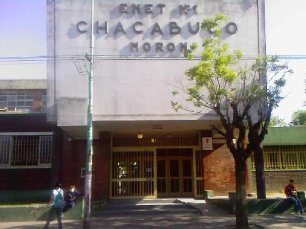
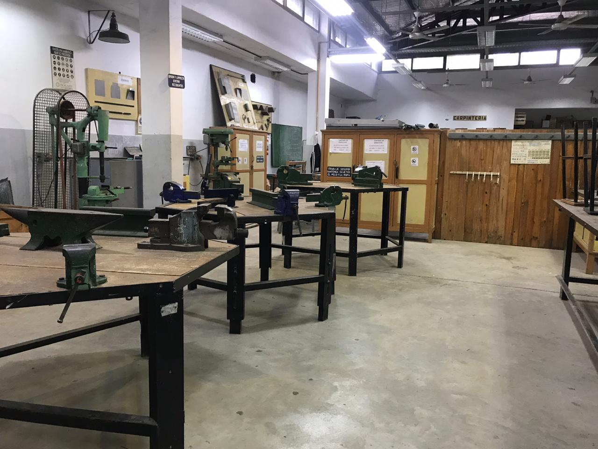
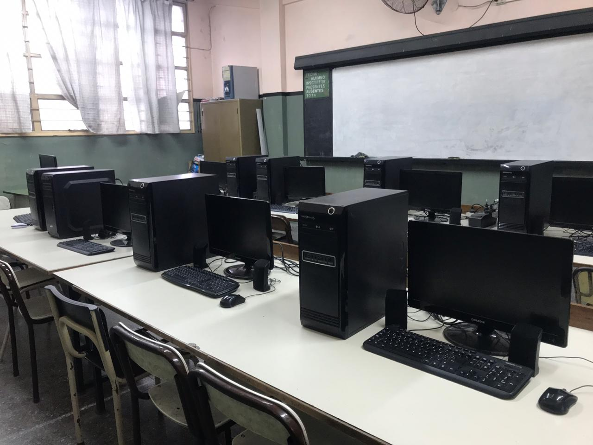

Fecha de Ingreso: 15/03/1997
Fecha de Salida: 18/12/2002
Técnico en Programacion
Durante mi formación técnica en programación, desarrollé habilidades en el ciclo de vida del software, desde el análisis de requerimientos hasta la codificación y el testeo. Adquirí fluidez en diversos lenguajes y metodologías ágiles, enfocándome en la creación de soluciones lógicas y eficientes.
Imágenes de la Institución:


